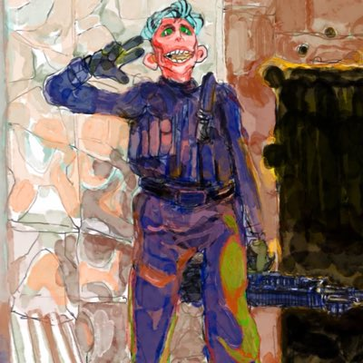

Hello, I’m Craiko, an 18-year-old YouTuber. I started my YouTube journey by creating Let’s Play videos of Wii U games, recording them on my mom’s iPad. Although I had some initial success, I had to shut down my account.
During COVID, I revived my channel with my Gamertag, Craiko, and uploaded videos occasionally. However, I’ve decided to take YouTube seriously and have a lot of fun doing it.
I created this website to share my thoughts with the world and because I hate that YouTube won't let me customize my page and YT posts are lacking. I will be updating frequently, and I am setting up a Discord server so I can talk to people who watch my videos and facilitate philosophical discussions.